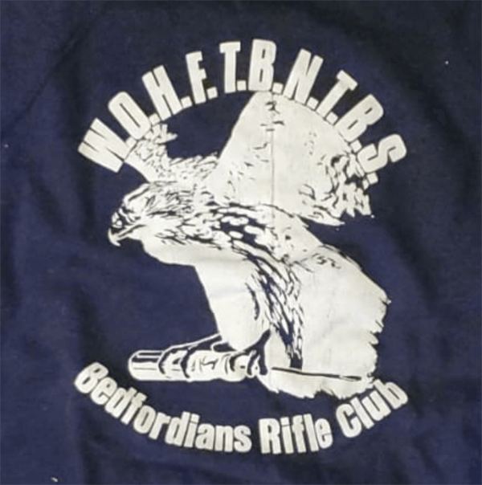

We’re Only Here For The Beer Not The Bloody Shooting!
This ‘ancient ‘club moto derives from at least as far back as the 1960s and sums up our ethos.
We do this for fun!
We usually spend more time socialising than shooting. Even on the range, a lot of time is spent getting ready to shoot, chatting with fellow club members while waiting to shoot or having already shot.
We don’t like to break a sweat, except when carrying our kit from the car to the firing point, or when the weather is warm enough to make it unavoidable.
 The Bedford Eagle needs no introduction!
Grasped in its talons is a large flat bladed screwdriver, a Bedfordians Rifle Club icon. It belonged to Mr. T.J. Elliott, the renowned Bedford School Shooting Master and Coach between 1966 to 1987, and became immortalised allegedly after he used as an excuse for his own disappointing score one day, the bedding screw of his rifle being loose.